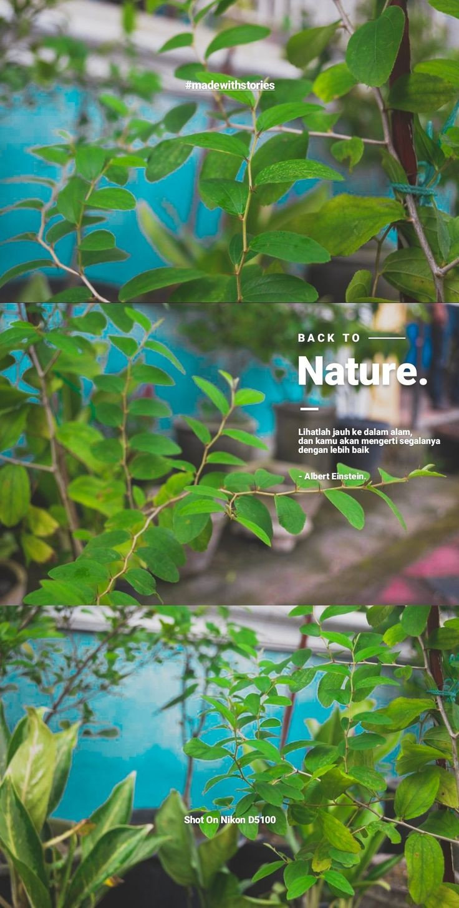

Our Story
Kumul Organics was founded on the belief that fresh, organic food should be accessible to everyone. Our mission is to provide high-quality organic products grown with love and care.
Our Values
- Sustainability
- Community Impact
- Health and Well-being